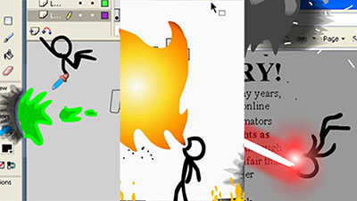

Proposal - "Fedora Stacker"
High Concept
Stack falling fedoras on the player's head as tall as you can
| Genre | Strategy |
| Platform | Desktop Only - Browser Game |
Story Concept
The previous story concept relied a bit to heavily on the skill/physics aspect, which I've decided to cut.
New Story: You are determined to beat the world record for most hats caught on head.
Emotions to Drive:
- Excitement
- Determination
- Joy/Comedy (It is intended to be funny.)
Primarily focused on replaying to get a higher score than last time.
Aesthetics
- Stick figure, line art
- Omage to older flash games like Line Rider, and animations like Animator v. Animation

Gameplay
Controls
- Maneuver player with arrowkeys or with WASD.
Mechanics
Core Mechanic: Land the hat on the man's head by moving back and forth to catch them. As the stack gets taller, it gets harder to reach the other hats in time.
Introduce falling obstacles when players grows comfortable. Perhaps level based, where the number of hats you have to stack grows with each level. New mechanics introduced every few levels.
Player Learning
Learn how to play by introducing new mechanics only when you are familiar with the previous mechanic introduced. Only introduce controls with keyboard initially with an animation in the background during the first few moments of gameplay.
Tech Stack
- PixiJS
- JavaScript